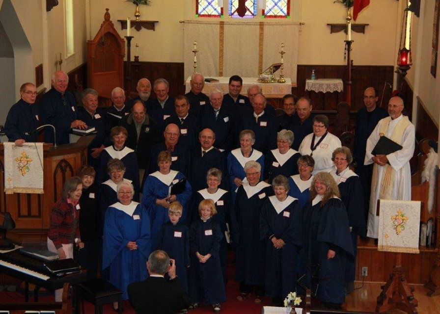
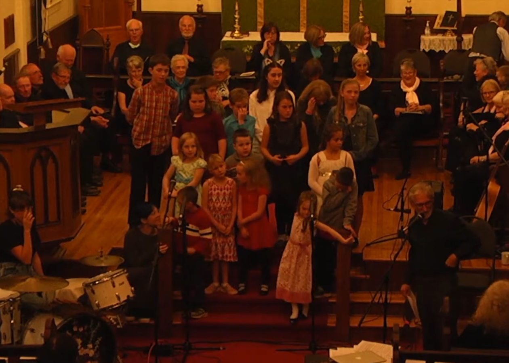

St. Stephen's Choir
Interdum amet accumsan placerat commodo ut amet aliquam blandit nunc tempor lobortis nunc non. Mi accumsan.
Choir

Activities and Volunteer Opportunity
Be a part of our volunteer community and help make Chester a better place
Activities